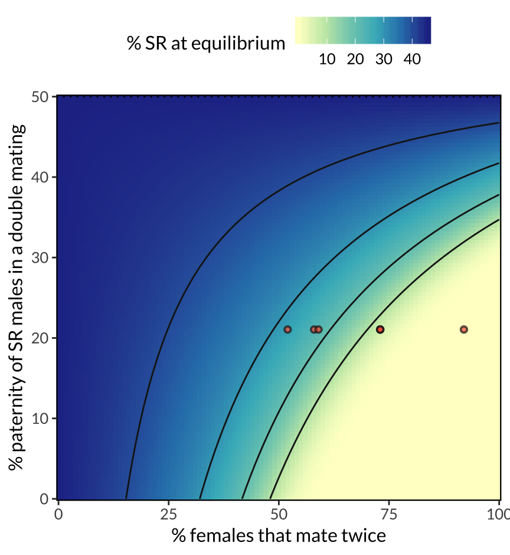
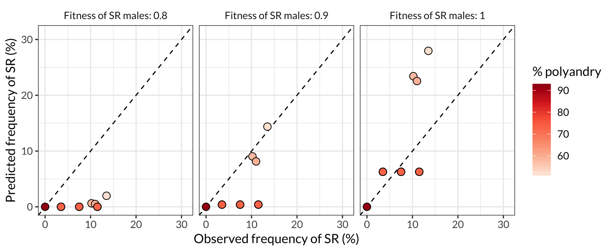

Last updated: 2019-08-14
Checks: 6 0
Knit directory: cost_of_SR_Dpseudo/
This reproducible R Markdown analysis was created with workflowr (version 1.3.0). The Checks tab describes the reproducibility checks that were applied when the results were created. The Past versions tab lists the development history.
Great! Since the R Markdown file has been committed to the Git repository, you know the exact version of the code that produced these results.
Great job! The global environment was empty. Objects defined in the global environment can affect the analysis in your R Markdown file in unknown ways. For reproduciblity it’s best to always run the code in an empty environment.
The command set.seed(20190319) was run prior to running the code in the R Markdown file. Setting a seed ensures that any results that rely on randomness, e.g. subsampling or permutations, are reproducible.
Great job! Recording the operating system, R version, and package versions is critical for reproducibility.
Nice! There were no cached chunks for this analysis, so you can be confident that you successfully produced the results during this run.
Great! You are using Git for version control. Tracking code development and connecting the code version to the results is critical for reproducibility. The version displayed above was the version of the Git repository at the time these results were generated.
Note that you need to be careful to ensure that all relevant files for the analysis have been committed to Git prior to generating the results (you can use wflow_publish or wflow_git_commit). workflowr only checks the R Markdown file, but you know if there are other scripts or data files that it depends on. Below is the status of the Git repository when the results were generated:
Ignored files:
Ignored: .DS_Store
Ignored: .Rhistory
Ignored: .Rproj.user/
Ignored: output/.DS_Store
Note that any generated files, e.g. HTML, png, CSS, etc., are not included in this status report because it is ok for generated content to have uncommitted changes.
These are the previous versions of the R Markdown and HTML files. If you’ve configured a remote Git repository (see ?wflow_git_remote), click on the hyperlinks in the table below to view them.
| File | Version | Author | Date | Message |
|---|---|---|---|---|
| html | e5f7926 | lukeholman | 2019-08-14 | working nicely |
| html | 24d4c9c | lukeholman | 2019-07-02 | Build site. |
| Rmd | 0479dbb | lukeholman | 2019-07-02 | re-run model |
| html | 93aec6e | lukeholman | 2019-06-28 | Build site. |
| Rmd | 01d7dbb | lukeholman | 2019-06-28 | First complete commit |
| html | 8c6e0c3 | lukeholman | 2019-06-28 | Build site. |
| Rmd | ffdc5d4 | lukeholman | 2019-06-28 | First complete commit |
| html | ffdc5d4 | lukeholman | 2019-06-28 | First complete commit |
library(purrr)
library(dplyr)
library(future)
library(future.apply)
library(kableExtra)
library(ggplot2)
library(showtext)
font_add_google(name = "Lato", family = "Lato", regular.wt = 400, bold.wt = 700)
showtext_auto()
options(stringsAsFactors = FALSE)real_world_data <- data.frame(
real_freq_SR = c(10.2, 13.5, 11.5, 11.0, 7.5, 3.5, 0),
freq_polyandry = c(0.58, 0.52, 0.73, 0.59, 0.73, 0.73, 0.92)
)
# The average of P1 and P2 in from Giraldo-Perez et al. 2016, https://onlinelibrary.wiley.com/doi/pdf/10.1111/jeb.12792
average_paternity_SR_males <- 0.2105
# The estimated frequency of SR male progeny who inherit SR, REFERENCE?
real_world_k <- 0.96The “mating table” is list of all the possible mating types (e.g. ST/SR mother with a SR/Y father, etc etc), which lists the possible offspring genotypes and their associated frequencies. The precise values in the mating table are a function of \(k\) (i.e. the strength of segregation distortion) and expected paternity of SR males when the female is double-mated to an ST and a SR male. We assume that the meiosis is Mendelian except in SR males, and that all crosses except those with a SR father produce a 50:50 sex ratio.
make_mating_table <- function(k, paternity_of_SR_males, mating_types){
offspring <- vector(mode = "list", nrow(mating_types))
make_offspring <- function(row, type, zygote_freq){
data.frame(mother = mating_types$mother[row],
father1 = mating_types$father1[row],
father2 = mating_types$father2[row],
type,
zygote_freq,
stringsAsFactors = FALSE)
}
g0 <- c("STST_female", "STSR_female", # possible offspring types
"ST_male", "SR_male")
g1 <- c("STSR_female", "SRSR_female",
"ST_male", "SR_male")
p1 <- c(0.5 * (1 + k), 0.5 * (1 - k))
p2 <- c(0.25 * (1 + k), 0.25 * (1 + k),
0.25 * (1 - k), 0.25 * (1 - k))
p3 <- c(0.5 * (1 - paternity_of_SR_males), # ST male wins, he transmits his ST-X with 50% chance
0.5 * paternity_of_SR_males * (1 + k), # SR male wins with probability sc, he transmits his SR-X 0.5*(1+k) chance
1 - 0.5 * (1 - paternity_of_SR_males) - 0.5 * paternity_of_SR_males * (1 + k)) # sons created by the remaining two possibilities
p4 <- c(0.25 * (1 - paternity_of_SR_males), # ST male wins, he transmits his ST-X with 50% chance, same X in female meiosis
0.25 * (1 - paternity_of_SR_males) + 0.25 * paternity_of_SR_males * (1 + k), # Either male wins and transmits the other X than the female does
0.25 * paternity_of_SR_males * (1 + k), # SR male wins, he transmits his SR-X 0.5*(1+k) chance, same X in female meiosis
0, 0)
p4[4:5] <- (1 - sum(p4[1:3])) / 2 # sons created by the remaining possibilities
rep25 <- rep(0.25, 4)
rep5 <- rep(0.5, 2)
# Single mating types
offspring[[1]] <- make_offspring(1, c("STST_female", "ST_male"), rep5)
offspring[[2]] <- make_offspring(2, g0, rep25)
offspring[[3]] <- make_offspring(3, c("STSR_female", "SR_male"), rep5)
offspring[[4]] <- make_offspring(4, c("STSR_female", "ST_male"), p1)
offspring[[5]] <- make_offspring(5, g1, p2)
offspring[[6]] <- make_offspring(6, c("SRSR_female", "SR_male"), p1)
# Double mating types - two ST males
offspring[[7]] <- make_offspring(7, c("STST_female", "ST_male"), rep5)
offspring[[8]] <- make_offspring(8, g0, rep25)
offspring[[9]] <- make_offspring(9, c("STSR_female", "SR_male"), rep5)
# Double mating types - ST and SR males
offspring[[10]] <- make_offspring(10, c("STST_female", "STSR_female", "ST_male"), p3)
offspring[[11]] <- make_offspring(11, c("STST_female",
"STSR_female",
"SRSR_female",
"ST_male",
"SR_male"), p4)
offspring[[12]] <- make_offspring(12, c("STSR_female", "SRSR_female", "SR_male"), p3)
# Double mating types - two SR males
offspring[[13]] <- make_offspring(13, c("STSR_female", "ST_male"), p1)
offspring[[14]] <- make_offspring(14, g1, p2)
offspring[[15]] <- make_offspring(15, c("SRSR_female", "SR_male"), p1)
output <- do.call("rbind", offspring)
names(offspring) <- paste(mating_types[,1], mating_types[,2], sep = " x ")
output
}An example of the output of make_mating_table(), under the assumptions that:
k = 0.9),paternity_of_SR_males = 0.23).make_mating_types <- function(){
expand.grid(mother = c("STST_female",
"STSR_female",
"SRSR_female"),
father1 = c("ST_male",
"SR_male"),
father2 = c("none",
"ST_male",
"SR_male"),
stringsAsFactors = FALSE) %>%
mutate(sorted_paste = map_chr(1:n(), function(i) paste0(sort(c(mother[i], father1[i], father2[i])), collapse = ""))) %>%
distinct(sorted_paste, .keep_all = TRUE) %>% select(-sorted_paste)
}
mating_types <- make_mating_types()
make_mating_table(k = 0.9, paternity_of_SR_males = 0.23, mating_types) %>%
rename(zygote_type = type) %>%
kable() %>%
kable_styling() %>%
scroll_box(height = "500px")| mother | father1 | father2 | zygote_type | zygote_freq |
|---|---|---|---|---|
| STST_female | ST_male | none | STST_female | 0.50000 |
| STST_female | ST_male | none | ST_male | 0.50000 |
| STSR_female | ST_male | none | STST_female | 0.25000 |
| STSR_female | ST_male | none | STSR_female | 0.25000 |
| STSR_female | ST_male | none | ST_male | 0.25000 |
| STSR_female | ST_male | none | SR_male | 0.25000 |
| SRSR_female | ST_male | none | STSR_female | 0.50000 |
| SRSR_female | ST_male | none | SR_male | 0.50000 |
| STST_female | SR_male | none | STSR_female | 0.95000 |
| STST_female | SR_male | none | ST_male | 0.05000 |
| STSR_female | SR_male | none | STSR_female | 0.47500 |
| STSR_female | SR_male | none | SRSR_female | 0.47500 |
| STSR_female | SR_male | none | ST_male | 0.02500 |
| STSR_female | SR_male | none | SR_male | 0.02500 |
| SRSR_female | SR_male | none | SRSR_female | 0.95000 |
| SRSR_female | SR_male | none | SR_male | 0.05000 |
| STST_female | ST_male | ST_male | STST_female | 0.50000 |
| STST_female | ST_male | ST_male | ST_male | 0.50000 |
| STSR_female | ST_male | ST_male | STST_female | 0.25000 |
| STSR_female | ST_male | ST_male | STSR_female | 0.25000 |
| STSR_female | ST_male | ST_male | ST_male | 0.25000 |
| STSR_female | ST_male | ST_male | SR_male | 0.25000 |
| SRSR_female | ST_male | ST_male | STSR_female | 0.50000 |
| SRSR_female | ST_male | ST_male | SR_male | 0.50000 |
| STST_female | SR_male | ST_male | STST_female | 0.38500 |
| STST_female | SR_male | ST_male | STSR_female | 0.21850 |
| STST_female | SR_male | ST_male | ST_male | 0.39650 |
| STSR_female | SR_male | ST_male | STST_female | 0.19250 |
| STSR_female | SR_male | ST_male | STSR_female | 0.30175 |
| STSR_female | SR_male | ST_male | SRSR_female | 0.10925 |
| STSR_female | SR_male | ST_male | ST_male | 0.19825 |
| STSR_female | SR_male | ST_male | SR_male | 0.19825 |
| SRSR_female | SR_male | ST_male | STSR_female | 0.38500 |
| SRSR_female | SR_male | ST_male | SRSR_female | 0.21850 |
| SRSR_female | SR_male | ST_male | SR_male | 0.39650 |
| STST_female | SR_male | SR_male | STSR_female | 0.95000 |
| STST_female | SR_male | SR_male | ST_male | 0.05000 |
| STSR_female | SR_male | SR_male | STSR_female | 0.47500 |
| STSR_female | SR_male | SR_male | SRSR_female | 0.47500 |
| STSR_female | SR_male | SR_male | ST_male | 0.02500 |
| STSR_female | SR_male | SR_male | SR_male | 0.02500 |
| SRSR_female | SR_male | SR_male | SRSR_female | 0.95000 |
| SRSR_female | SR_male | SR_male | SR_male | 0.05000 |
Given a set of genotype frequencies, it is simple to calculate the frequencies of each mating type. First, we implement selection, such that each genotype is represented in the mating types according to the product of its frequency and its fitness. Second, we determine the frequency of cross between male genotype \(i\) and female genotype \(j\) as \(i\times j\).
find_mating_type_frequencies <- function(pop, mating_types, freq_polyandry){
# Implement viability selection
pop$prop <- pop$prop * pop$fitness
pop$prop <- pop$prop / sum(pop$prop)
single_maters <- 1:6
double_maters <- 7:15
# Mating type freqs for the single-mating females is freq_single_maters * freq_females * freq_males, post selection
mating_types$mating_freq[single_maters] <- (1 - freq_polyandry) *
pop$prop[match(mating_types$mother[single_maters], pop$type)] *
pop$prop[match(mating_types$father1[single_maters], pop$type)]
# Mating type freqs for the single-mating females is freq_double_maters * freq_females * freq_father1 * freq_father2, post selection
# NB the ST + SR double matings are doubled, since they can occur with either male as father1
mating_types$mating_freq[double_maters] <- freq_polyandry *
pop$prop[match(mating_types$mother[double_maters], pop$type)] *
pop$prop[match(mating_types$father1[double_maters], pop$type)] *
pop$prop[match(mating_types$father2[double_maters], pop$type)]
mating_types$mating_freq[10:12] <- 2 * mating_types$mating_freq[10:12]
mating_types$mating_freq <- mating_types$mating_freq / sum(mating_types$mating_freq) # ensure the mating freqs sum to one
mating_types
}This function iterates over generations, implementing selection and reproduction each time, until either A) the SR alelle fixes, B) the SR alelle goes extinct, or C) the generation timer expires.
# Helper function to calculate the frequency of the SR allele
calc_prop_SR <- function(pop){
sum(c(pop$prop[c(1, 4)], 2 * pop$prop[2])) / (sum(c(2 * pop$prop[c(2,4,5)], pop$prop[c(1,3)])))
}
run_simulation <- function(generations,
k,
paternity_of_SR_males,
freq_polyandry,
w_STSR_female,
w_SRSR_female,
w_SR_male,
initial_freq_SR,
mating_types){
# Make the initial population
pop <- data.frame(
type = c("STST_female",
"STSR_female",
"SRSR_female",
"ST_male",
"SR_male"),
prop = c(0.5 * (1 - initial_freq_SR) ^ 2,
(1 - initial_freq_SR) * initial_freq_SR,
0.5 * initial_freq_SR ^ 2,
0.5 * (1 - initial_freq_SR),
0.5 * initial_freq_SR),
fitness = c(1, w_STSR_female, w_SRSR_female, 1, w_SR_male),
stringsAsFactors = FALSE) %>%
arrange(type)
# Make the mating table for this specific parameter space
mating_table <- make_mating_table(k, paternity_of_SR_males, mating_types)
# Iterate over generations
for(i in 1:generations){
# Find the mating type frequencies, find the offspring frequencies, and renormalise the frequencies to sum to one
prop_col <- mating_table %>%
left_join(find_mating_type_frequencies(pop, mating_types, freq_polyandry),
by = c("mother", "father1", "father2")) %>%
mutate(offspring_freq = mating_freq * zygote_freq) %>%
group_by(type) %>% # sorts by type?
summarise(prop = sum(offspring_freq)) %>%
mutate(prop = prop / sum(prop)) %>%
pull(prop)
# Calculate the frequency of SR.
# Quit early if SR fixed/extinct-ish
prop_SR <- calc_prop_SR(pop %>% mutate(prop = prop_col))
# if(is.na(prop_SR)) print(pop) # FOR DEBUGGING
pop <- pop %>% mutate(prop = prop_col)
if(prop_SR > 0.99) return(pop)
if(prop_SR < 0.0001) return(pop)
}
pop
}A helper function that runs run_simulation() on a data frame of parameter values.
run_many_simulations <- function(parameters){
mating_types <- make_mating_types() %>% mutate(mating_freq = NA)
# Carefully pass all the parameters to run_simulation()
run_one_simulation <- function(row, parameters, mating_types){
genotypes <- run_simulation(
generations = parameters$generations[row],
k = parameters$k[row],
paternity_of_SR_males = parameters$paternity_of_SR_males[row],
freq_polyandry = parameters$freq_polyandry[row],
w_STSR_female = parameters$w_STSR_female[row],
w_SRSR_female = parameters$w_SRSR_female[row],
w_SR_male = parameters$w_SR_male[row],
initial_freq_SR = parameters$initial_freq_SR[row],
mating_types = mating_types
)
output <- data.frame(parameters[row, ]) %>% as_tibble()
output$genotypes <- list(genotypes %>% select(-fitness))
output
}
# Loop over all the different parameter spaces
lapply(1:nrow(parameters), run_one_simulation, parameters = parameters, mating_types = mating_types) %>%
do.call("rbind", .) %>%
mutate(prop_SR = map_dbl(genotypes, calc_prop_SR))
}Used to define the parameter spaces that are plotted in Figure 2.
resolution <- 101
gen <- 100
initial_freq <- 0.1
parameters <- rbind(
expand.grid(
generations = gen,
k = real_world_k,
paternity_of_SR_males = seq(0, 0.5, length = resolution),
freq_polyandry = seq(0, 1, length = resolution),
w_STSR_female = 0.88, # Fitness from our Table of results
w_SRSR_female = 0.42, # Fitness from our Table of results
w_SR_male = 1,
initial_freq_SR = initial_freq,
facet = "Recessive cost in females")
) %>% as_tibble()cores <- 7
run_all <- function(){
if(!file.exists("data/simulation_output.rds")){ # if there is no data yet....
# Divide the job into 100 equal-ish chunks so that we can see the % completion as it proceeds
split_parameters <- split(parameters, sample(1:100, nrow(parameters), replace = TRUE))
n_chunks <- length(split_parameters)
for(i in 1:n_chunks){
print(paste(i, "out of", n_chunks))
plan("multicore")
chunk_size <- floor(nrow(split_parameters[[i]]) / cores)
simulation_output <- split(split_parameters[[i]],
c(rep(1:(cores-1), each = chunk_size),
rep(cores, nrow(split_parameters[[i]]) - chunk_size*(cores-1)))) %>%
future_lapply(run_many_simulations) %>% do.call("rbind", .)
saveRDS(simulation_output, paste("data/simulation_output_", i, ".rds", sep = ""))
}
} else { # if there is already some data...
simulation_output <- readRDS("data/simulation_output.rds")
if(nrow(simulation_output) != nrow(parameters)){
pasted_done <- apply(simulation_output[, names(simulation_output) %in% names(parameters)], 1, paste0, collapse = "_")
pasted_to_do <- apply(parameters, 1, paste0, collapse = "_")
trimmed_parameters <- parameters[!(pasted_to_do %in% pasted_done), ]
# Divide the job into 100 equal-ish chunks so that we can see the % completion as it proceeds
split_parameters <- split(trimmed_parameters, sample(1:10, nrow(parameters), replace = TRUE))
n_chunks <- length(split_parameters)
for(i in 1:length(split_parameters)){
print(paste(i, "out of", n_chunks, sep = ""))
plan("multicore")
chunk_size <- floor(nrow(split_parameters[[i]]) / cores)
simulation_output <- split(split_parameters[[i]],
c(rep(1:(cores-1), each = chunk_size),
rep(cores, nrow(split_parameters[[i]]) - chunk_size*(cores-1)))) %>%
future_lapply(run_many_simulations) %>% do.call("rbind", .)
saveRDS(simulation_output, paste("data/simulation_output_surplus_", i, ".rds", sep = ""))
}
}
}
simulation_output <- list.files(path = "data", pattern = "simulation_output_", full.names = TRUE) %>%
lapply(readRDS) %>% do.call("rbind", .)
saveRDS(simulation_output, "data/simulation_output.rds")
}
run_all()
simulation_output <- readRDS("data/simulation_output.rds")
# use to delete and re-run: unlink("data/simulation_output.rds")
# use to delete individual files: unlink(list.files(path = "data", pattern = "simulation_output_", full.names = TRUE))figure_2 <- simulation_output %>%
filter(w_SR_male == 1) %>%
mutate(k = paste("Strength of drive:", k)) %>%
ggplot(aes(100 * freq_polyandry, 100 * paternity_of_SR_males, fill = 100 * prop_SR)) +
geom_blank() +
geom_raster() +
stat_contour(aes(z = 100 * prop_SR), colour = "grey10", binwidth = 10) +
geom_hline(yintercept = 50, colour = "black", linetype = 3) +
labs(x = "% females that mate twice",
y = "% paternity of SR males in a double mating") +
annotate("pointrange", x = 100 * real_world_data$freq_polyandry, y = 21.05,
pch = 21, alpha = 0.7,
fill = "tomato", size = .3, ymin = 20, ymax = 20, colour = "grey10") +
scale_fill_distiller(palette = "YlGnBu", direction = 1, name = "% SR at equilibrium") + #, limits = c(0,100)) +
scale_x_continuous(expand = c(0, 0)) +
scale_y_continuous(expand = c(0, 0)) + # , labels = c(0, 0.25, 0.5, 0.75, 1)
theme(panel.border = element_rect(fill = NA, colour = "black", size = .8),
text = element_text(family = "Lato", size = 12),
strip.background = element_rect(colour = "black", fill = "grey90", size = .8),
legend.position = "top")
figure_2 %>% ggsave(filename = "figures/figure_2.pdf", height = 4.9, width = 4.5)
figure_2
| Version | Author | Date |
|---|---|---|
| ffdc5d4 | lukeholman | 2019-06-28 |
Figure 2: Predicted equilibrium frequency of the SR allele, calculated from the population genetic model. The model shows that SR is predicted to reach a lower equilibrium frequency when a high proportion of females mate multiply (x-axis), and when SR males are inferior sperm competitors to ST males (y-axis). These two predictors interact, because sperm competition becomes more selectively important as polyandry becomes more common. The seven red points illustrate the range of female mating frequencies observed observed across seven North American populations, and their position on the y-axis (0.21) uses data on SR male siring success from Giraldo-Perez et al. 2016. The figure further assumes that SR males pass on the SR chromosome to 96% of their offspring, and that ST and SR males have equal survival and mating success.
parameters <- rbind(
expand.grid(
generations = gen,
k = real_world_k,
paternity_of_SR_males = average_paternity_SR_males,
freq_polyandry = real_world_data$freq_polyandry,
w_STSR_female = 0.88, # Fitness from our Table of results
w_SRSR_female = 0.42, # Fitness from our Table of results
w_SR_male = c(0.8, 0.9, 1),
initial_freq_SR = initial_freq,
facet = "Recessive cost in females")
) %>% as_tibble()
observed_vs_expected_data <-
run_many_simulations(parameters) %>%
left_join(real_world_data, by = "freq_polyandry") %>%
rename(predicted_p_SR = prop_SR)
figure_3 <- observed_vs_expected_data %>%
mutate(w_SR_male = paste("Fitness of SR males:", w_SR_male)) %>%
ggplot(aes(real_freq_SR, 100 * predicted_p_SR, fill = 100*freq_polyandry)) +
geom_abline(slope = 1, intercept=0, linetype=2) +
geom_point(pch=21, size = 3) +
scale_x_continuous(limits =c(0, 31)) +
scale_y_continuous(limits =c(0, 31)) +
scale_fill_distiller(palette = "Reds", direction = 1, name = "% polyandry") +
labs(x="Observed frequency of SR (%)",
y="Predicted frequency of SR (%)") +
facet_wrap(~w_SR_male) +
theme_bw() +
theme(strip.background = element_blank(),
text = element_text(family = "Lato", size = 12)
)
figure_3 %>% ggsave(filename = "figures/figure_3.pdf", height = 3.3, width = 8)
figure_3
| Version | Author | Date |
|---|---|---|
| ffdc5d4 | lukeholman | 2019-06-28 |
Figure 3: Comparison of the SR frequencies predicted by the model with the frequencies observed in the wild across seven North American populations. Each point represents one of the populations plotted in Figure 2, and the colour of the point indicates the frequency of female multiple mating in that population. More polyandrous populations contain a lower frequency of SR chromosomes, both in nature and in the model predictions, and the predictions are most accurate when we assume that SR males have similar or equal survival and mating success to ST males (middle and right panel). The dashed line shows \(y=x\), such that plots in which the points are closer to the line indicate a better match between the predicted and observed allele frequencies.
sessionInfo()R version 3.5.1 (2018-07-02)
Platform: x86_64-apple-darwin15.6.0 (64-bit)
Running under: macOS High Sierra 10.13.6
Matrix products: default
BLAS: /Library/Frameworks/R.framework/Versions/3.5/Resources/lib/libRblas.0.dylib
LAPACK: /Library/Frameworks/R.framework/Versions/3.5/Resources/lib/libRlapack.dylib
locale:
[1] en_AU.UTF-8/en_AU.UTF-8/en_AU.UTF-8/C/en_AU.UTF-8/en_AU.UTF-8
attached base packages:
[1] stats graphics grDevices utils datasets methods base
other attached packages:
[1] showtext_0.5-1 showtextdb_2.0 sysfonts_0.7.2
[4] ggplot2_3.1.0 kableExtra_0.9.0 future.apply_1.3.0
[7] future_1.14.0 dplyr_0.8.0.1 purrr_0.3.2
loaded via a namespace (and not attached):
[1] tidyselect_0.2.5 xfun_0.8 listenv_0.7.0
[4] colorspace_1.3-2 htmltools_0.3.6 viridisLite_0.3.0
[7] yaml_2.2.0 rlang_0.4.0 pillar_1.3.1.9000
[10] glue_1.3.1.9000 withr_2.1.2 RColorBrewer_1.1-2
[13] plyr_1.8.4 stringr_1.4.0 munsell_0.5.0
[16] gtable_0.2.0 workflowr_1.3.0 rvest_0.3.2
[19] codetools_0.2-15 evaluate_0.14 labeling_0.3
[22] knitr_1.23 parallel_3.5.1 curl_3.3
[25] highr_0.8 Rcpp_1.0.2 readr_1.1.1
[28] backports_1.1.2 scales_1.0.0 jsonlite_1.6
[31] fs_1.3.1 hms_0.4.2 digest_0.6.20
[34] stringi_1.4.3 rprojroot_1.3-2 grid_3.5.1
[37] tools_3.5.1 magrittr_1.5 lazyeval_0.2.2
[40] tibble_2.0.99.9000 crayon_1.3.4 whisker_0.3-2
[43] pkgconfig_2.0.2 xml2_1.2.0 assertthat_0.2.1
[46] rmarkdown_1.13 httr_1.4.0 rstudioapi_0.10
[49] R6_2.4.0 globals_0.12.4 git2r_0.23.0
[52] compiler_3.5.1